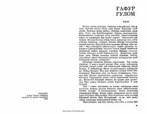

YGʻafur Gʻulomning mashhur "Yodgor" qissasidan parchalar.
Gʻafur Gʻulomning ushbu asarida oʻtgan asrning murakkab hayotiy voqealari, inson taqdiri va jamiyatdagi oʻzgarishlar tasvirlangan. Asar qahramonining boshidan kechirgan turli qiziqarli va ibratli voqealar kitobxonni e'tiborini tortadi.